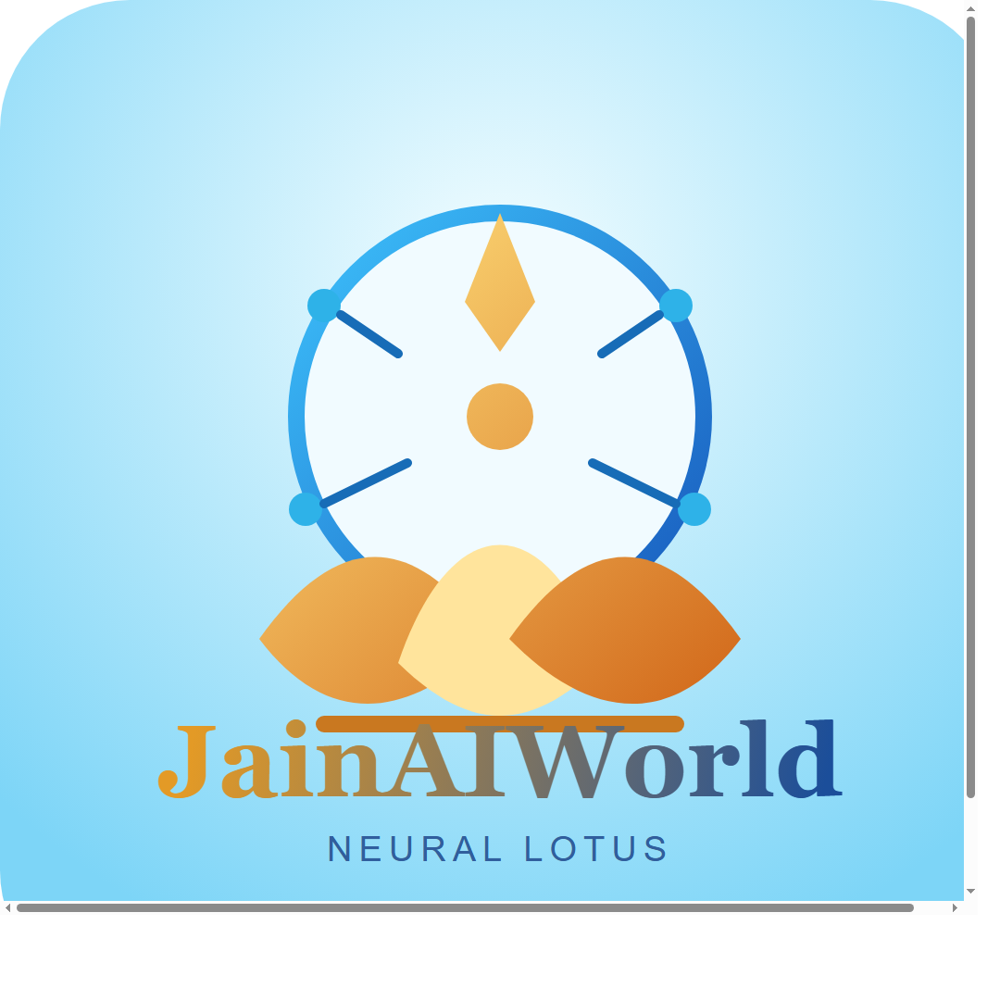

These two directions push the brand slightly younger, brighter, and more Instagram-friendly while still feeling devotional and Jain-inspired.

Option 4: Neural Lotus
The cleanest fit if you want young generation appeal without looking too trendy. It keeps the spiritual lotus language but adds bright orbit nodes and a fresher blue-gold contrast.
BEST BALANCE
Option 5: Aura Monogram
This one is more social-first and youthful. It is bolder, easier to notice in feeds, and feels more like a modern youth spiritual brand.